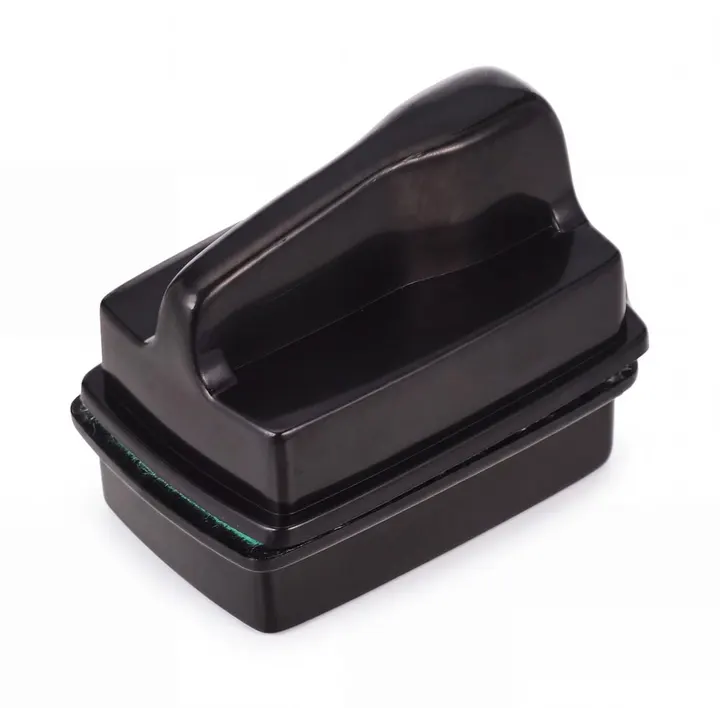

AQUA HAVENملف القطعة / 01

الصورة الأصلية من كتالوج أكوا هافن
أدوات الصيانة
منظف مغناطيسي لزجاج الحوض دوفين – صغير
منظف مغناطيسي صغير من دوفين لتنظيف الطحالب الخفيفة وآثار الأوساخ من زجاج الحوض دون إدخال اليد للماء.
اقرأ التفاصيلتفاصيل القطعة
السعر المرجعي
متاح في اللقطة٣٥ ر.س
هذه معاينة للمجموعة. السعر والتوفر مرجعيان، والطلب والدفع غير متاحين هنا.
وصف المنتج
منظف مغناطيسي من دوفين بالحجم الصغير، ينظّف السطح الداخلي لزجاج الحوض من الخارج، ويساعد على إزالة الطحالب الخفيفة وآثار الأوساخ أثناء الصيانة اليومية.
المميزات
- تنظيف الزجاج من الخارج بواسطة المغناطيس
- يساعد على إزالة الطحالب الخفيفة والأوساخ
- يقلل الحاجة لإدخال اليد داخل الحوض
- مناسب للصيانة الدورية
المواصفات
- الماركة: دوفين
- الحجم: صغير
- يناسب: الأحواض الصغيرة والزجاج الأقل سماكة
طريقة الاستخدام
ضع الجزء الداخلي والجزء الخارجي مقابل بعضهما على الزجاج وحرّك المنظف ببطء. افحص سطح التنظيف قبل الاستخدام للتأكد من عدم وجود رمل أو حصى قد يخدش الزجاج.
ملاحظة
تأكد من ملاءمة قوة المغناطيس لسماكة زجاج حوضك. للأحواض الأكبر أو الزجاج الأسمك اختر الحجم الكبير.
استكشف المزيد
تفاصيل من العالم نفسه.